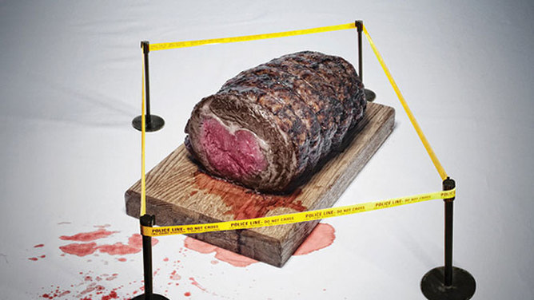
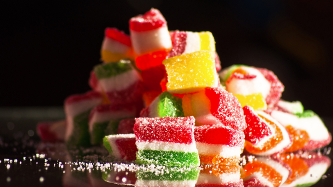
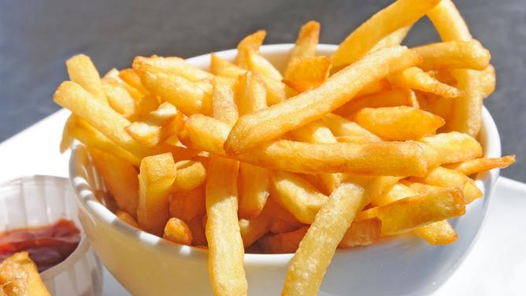
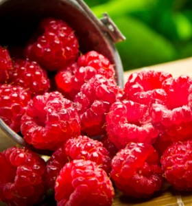
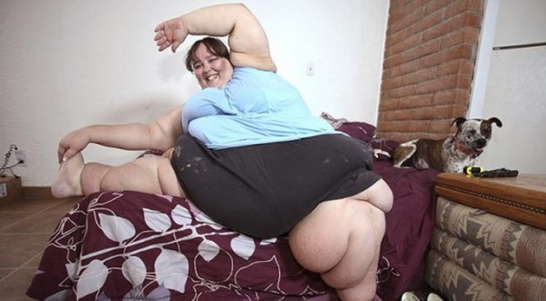

Отровните храни

Да умрем от глад или да оцелеем?
Иронията е в това, че всъщност има предостатъчно полезни храни, които не само можем, но и трябва да изберем,
ако държим на здравето си. В правилното количество и във високо качество, не е уместно да се лишаваме нито от
месото, нито от плодовете и зеленчуците.
При всички положения обаче, особено в България сме зависими от принципа "цената определя качеството",
а след като нямаме финансовата възможност, логично избираме и по-ниското такова. Така се храним с евтини
продукти, чието съдържание не познаваме, а то е пълно с вредни добавки.
Какво да изберем?
Рибата - според някои проучвания, морските продукти все по-често са причинители за
отравяния, заради способността им да натрупват в себе си високо наличие на токсични
вещества. Ако се доверим на специалистите, то е най-добре да избираме риба от северните
ширини - тя е с най-малко токсично натрупване, а същевременно е богата на фосфор и белтъчини.
Редно е да я консумираме поне веднъж седмично.
Кренвирши, бекон, салами - това са най-вредните възможни продукти. Доказано е,
че в голяма част от случаите на рак са причинени именно от често хранене с подобен тип месо.
"Рискът за развитие на онкозаболяване е с 50% по-висок при хора, които редовно консумират
преработен тип меса, в сравнение с останалите.
Плодове и зеленчуци - най-полезни безспорно са екологично чистите варианти.
За съжаление, макар да навлизат с все по-сериозно присъствие на родния пазар,
те са и с висока цена и все още малцина българи успяват да си ги позволят.
Основното им предмство е, че са отглеждани при определени условия - състав на почвата,
тип торове и т.н., които намаляват до минимум опасността от евентуално канцерогенно действие.
Какво прави захарта с мозъка ни?

Когато ядете нещо с високо съдържание на захар, това оказва влияние върху
вкусовите ви рецептори, стомахът и мозъкът ви. С други думи всички те забелязват.
Получава се едно специфично активиране на централната нервна система, което не е
толкова различно от това следствие на пристрастяващи субстанции като алкохол, цигари и наркотици.
Прекаляването със захарта увеличава значително нивата на допамин в организма и ви кара да копнеете
за още и още. Вижте във видеото защо е необходимо да имате мярка със сладкото.
Пържените картофи причиняват рак

Пържените картофи, бисквитите, царевичните пръчици и някои
детски храни съдържат акриламид, който води до ракови заболявания.
Веществото е канцерогенно, потвърди Европейската агенция по безопасност на
храните EFSA, която през миналата година задължи страните-членки да правят
ежегоден мониторинг за съдържанието на опасното вещество в храната. Агенцията
започна и консултации със съвместния комитет по хранителните добавки JECFA между
Световната здравна организация и FAО.
Акриламид се съдържа в брашното, хляба, кашата, ориза, суровите картофи,
месото и рибата, мюсли, царевични пръчици, бисквити и крекери. Неговата концентрация
обаче скача многократно, ако тези храни са обработени при температури над 120 градуса
– печене, пържене, грил. При топлинната обработка някои видове захари и аминокиселината
аспарагин в тези храни се превръщат във вредния акриламид. Световната здравна организация
е определила пределно допустимата му норма във водата – от 0,1 микрограм (мкг) на литър.
Малините – „бомба“ от витамини, фибри, антиоксиданти

Малините имат висока концентрация на елагова киселина – фенолно съединение,
което има свойството да предпазва от развитие на рак, като спира растежа на
туморните клетки и преустановява прогреса на някои видове рак.
Естествените масла в малините имат слънцезащитно свойство. Те спомагат за
правилната грижа за кожата, а също така и за загубата на килограми. Малките
червени плодове подобряват и имунитета.
Малините имат високо съдържание на диетични фибри и манган. Фибрите спомагат за забавяне на храносмилането,
като по този начин остава усещането
за ситост за по-дълго. Манганът поддържа нивата на метаболизма високи, вследствие
на което се изгарят повече мазнини.
Червените плодове защитават кожата от вредните ултравиолетови лъчи.
Антиоксидантната сила на витамин C ефективно намалява
появата на старчески петна и обезцветяването на кожата.
Те също така могат да допринесат и за по-младежко излъчване, като „запълнят“ фините бръчки.
Ежедневната консумация на малини може да бъде естествено средство против макулна
дегенерация – заболяване, което се свързва с напредването на възрастта и засяга зрението.
Според някои данни малините са изключително полезни за жените. Те сочат,
че листата на плода могат да се използват за приготвянето на чай, който
спомага за регулирането на менструалните цикли и намалява прекомерното кървене.
Изследователи твърдят още, че консумацията на този чай, както и на
пресните плодове, може да повиши произвеждането на кърма при кърмещите жени.
Сега е моментът да се отървете от всеки излишен килограм

Дори и хората, които не планират да лежат по бански на плажа,
със сигурност нямат нищо против да се чувстват по-леко през горещите месеци.
Строгите ограничаващи диети не са най-добрият път към вталена фигура.
Според диетолозите напълно възможно е да отслабнете бързо само ако правилно
пренастроите хранителния си режим. Разбира се, не е здравословно да свалите
излишните килограми с мълниеносни темпове – това би ви коствало постоянно чувство
на глад, световъртеж, главоболие, мускулни болки и дори по-сериозни последици за
здравето. Лекарите съветват да избягвате така наречените монодиети – те се базират
на небалансирано хранене и лишават организма от необходимите витамини, минерали и
аминокиселини. Особено вредни са диетите, които забраняват протеините, тъй като
белтъчините са основният строителен материал за клетките. При остър дефицит на
белтъчини организмът изразходва не мазнини, а мускулна маса. Ако отслабнете по
този начин, ще платите доста висока цена: тъмни кръгове под очите, авитаминоза,
риск от крехки и чупливи нокти и коса заради недостига на калий. Изключването на
въглехидрати от менюто пък лишава организма от енергия и на практика води до постоянно чувство на глад.